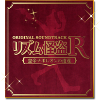

- タイトル
- リズム怪盗R 皇帝ナポレオンの遺産
ORIGINAL SOUNDTRACK - 発売日
- 2012年2月15日(水)
- 価格
- 3,500円（税込）
- 制作
- WAVEMASTER ENTERTAINMENT
- 発売元
- 株式会社ウェーブマスター
- 販売元
- エイベックス・マーケティング株式会社
3月15日より iTunes でも配信開始！
リズム怪盗R 皇帝ナポレオンの遺産 オリジナル サウンドトラック Vol. 1～3
- 価格
- 1曲：150円（税込）
Vol. 1～3それぞれのセット価格：1,200円（税込）
iTunes Store 配信URL
ジャズ、バロック音楽、ダンスミュージックなどの要素がミックスされたゲーム本編の楽曲は、「スペースチャンネル5」、「ソニック」シリーズなどでお馴染み、セガのコンポーザー幡谷尚史と大谷智哉を中心に制作。
豪華なブラスセクション、リッチなストリングス、エレガントなチェンバロなど生楽器の演奏をふんだんに収録した、リズムゲーム、アニメーション、アドベンチャーパートの楽曲はもちろんのこと、「怪盗Rのテーマ」の完全版や、国内版のゲーム本編には未収録となるカヒミ・カリィをヴォーカルに起用した海外版エンディングテーマ「Je te dis au revoir」など、携帯型ゲーム機の枠を超えたゴージャスでドラマチックな楽曲、全97曲を収録した3枚組のコンプリート・サウンドトラックです。
全楽曲の解説を掲載したブックレットなど「リズム怪盗R」の世界をより深く堪能出来る1品です！
'91年デビュー以降、国内外で作品を発表、NHKFMのパーソナリティー映画コメント執筆、雑誌やwebでの連載コラムなど担当。'10年にアルバム「It's Here」をリリース、同時期、結婚出産を機にオーガニック スキンケア「Preens」をプロデュースし発売中。
Disc-1 |
|
|---|---|
| 01. | 怪盗Rのテーマ |
| 02. | The Story So Far… |
| 03. | ミステール事件 |
| 04. | ラルフ登場 |
| 05. | 怪盗Rジングル |
| 06. | SHOW TIME |
| 07. | リズムゲーム クリア |
| 08. | 紋章の秘密 |
| 09. | Night in Paris |
| 10. | 音の仕掛け |
| 11. | 音の仕掛け クリア |
| 12. | 侵入 |
| 13. | ルーヴル美術館侵入 |
| 14. | Time Limit |
| 15. | ボードワン警視登場 |
| 16. | パリ市警からの逃走 |
| 17. | Day in Paris |
| 18. | マリアとの出会い |
| 19. | ナポレオンのテーマ |
| 20. | バトル 悪魔の騎士団 |
| 21. | 逃げ去るR |
| 22. | Chapter |
| 23. | ラルフの日常 |
| 24. | 月の姫君をひけ |
| 25. | 悪魔の騎士団を蹴散らせ |
| 26. | ノートルダムからの脱出 |
| 27. | パリ市警に潜入せよ |
| 28. | 探偵クロード登場 |
| 29. | 地下通路を進め |
| 30. | ナポレオンのアジト |
| 31. | エリザベート公爵夫人とマリア |
| 32. | ボーイ試験に合格せよ |
| 33. | 怪盗フォンデュの大作戦 |
| 34. | 対決 執事ロアン |
| 35. | オペラ座から脱出せよ |
| 36. | 再決戦 探偵クロード |
| 37. | クロードとの再戦 |
| 38. | マリアのテーマ |
| 39. | マリアを励ますラルフ |
| 40. | マリアをはげませ |
| 41. | Day in Paris ver.2 |
Disc-2 |
|
|---|---|
| 01. | R |
| 02. | Main Menu |
| 03. | アパートの秘密 |
| 04. | いなくなった父親 |
| 05. | ルーヴル美術館侵入再び |
| 06. | 演奏試験に合格せよ (G線上のアリア) |
| 07. | La musique dans les monuments |
| 08. | 祝賀会会場にて |
| 09. | SHALL WE DANCE ? (美しく青きドナウ) |
| 10. | 対決 皇帝ナポレオン |
| 11. | エッフェル塔の戦い |
| 12. | 怪盗R、凶弾に倒れる (小フーガ ト短調 BWV578) |
| 13. | グライダーで逃げ延びろ |
| 14. | エリザベート邸潜入 |
| 15. | ボードワン ｖｓ 騎士団 |
| 16. | エッフェル塔へ急げ |
| 17. | 竜の玉座の鍵 |
| 18. | ナポレオンの演説 |
| 19. | ラストバトル 悪魔の騎士団 |
| 20. | 凶弾に倒れるエリザベート |
| 21. | 真の悪魔の騎士団 |
| 22. | ハインリヒを阻止せよ (小フーガ ト短調 BWV578) |
| 23. | 空中庭園を進め |
| 24. | 決戦 皇帝ナポレオン |
| 25. | パリの嵐 |
| 26. | 希望の旋律 |
| 27. | ティアマトの腕輪、輝く時 |
| 28. | 意思を受け継ぐもの |
| 29. | 空中庭園からの脱出 |
| 30. | パリ祭の凱歌 |
| 31. | マリアとの別れ |
| 32. | LAST DANCE |
| 33. | さよなら怪盗R |
| 34. | Je te dis au revoir |
| 35. | 怪盗R参上 |
Disc-3 |
|
|---|---|
| 01. | Fête de Paris (Je te veux) |
| 02. | 飛びつけ！お肉大作戦 |
| 03. | リズムキッチン |
| 04. | サンバカーニバル (VAMOS A CARNAVAL!) |
| 05. | ラブ作戦 |
| 06. | IT'S DOG SHOW TIME |
| 07. | ニセ怪盗R登場！(Option Remix) |
| 08. | ニセ怪盗R再び！? |
| 09. | 君のためなら踊れる (きみのためなら死ねる～ずんずん60's節MIX～) |
| 10. | 音探し |
| 11. | ショップ オーバン |
| 12. | 伝説の楽器店 |
| 13. | FAILED… |
| 14. | パリ屈指の用心棒 |
| 15. | 再び！お肉大作戦 |
| 16. | ラブ作戦 愛の力 |
| 17. | レストラン試験 |
| 18. | フォンデュの願い |
| 19. | 親子の絆 |
| 20. | 独奏 幻の譜面 |
| 21. | Je te dis au revoir (Instrumental) |
「リズム怪盗R スペシャル・セレクションCD」は、全国の対象店舗にて『リズム怪盗R 』を予約購入頂いた方を対象に、先着購入特典としてプレゼントするもので、『スペースチャンネル5』や『ソニック』シリーズなどでお馴染み、セガのコンポーザー幡谷尚史と大谷智哉を中心に制作されたゲーム楽曲30曲を収録しています。
本特典は数量限定で、この先着購入キャンペーンでしか手に入らないプレミアムアイテムとなります。 ぜひこの機会にゲットしてください！
- 特典は数に限りがあります。
- 先着購入特典は商品購入時にお渡し致します。
- 実施店舗につきましては店頭にてご確認ください。
- 特典が無くなり次第、本キャンペーンは終了となります。
- 特典の内容・デザインは予告なく変更する場合がございます。予めご了承ください。